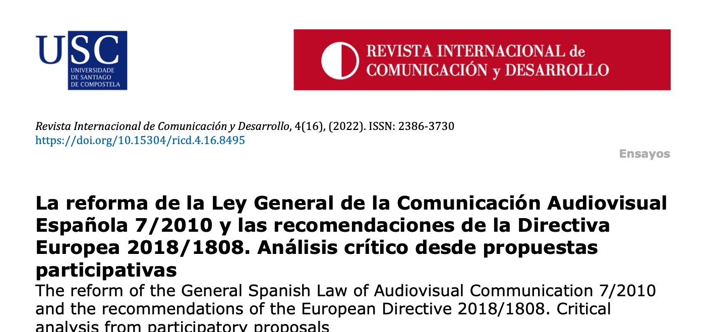

El Proyecto de Ley General de la Comunicación Audiovisual (PLCA), enviado al Congreso de los Diputados el 1 de diciembre de 2021, tiene como propósito transponer al ordenamiento jurídico español la Directiva de Servicios de Comunicación Audiovisual (UE) 2018/1808 sobre la coordinación de disposiciones legales y administrativas relativas a la prestación de servicios de comunicación audiovisual. Este ensayo hace un análisis detallado del PLCA a partir de alegaciones presentadas por asociaciones y entidades representativas del sector durante el período de consulta pública. El análisis de las cuestiones más importantes denota que el texto es susceptible de mejoras en áreas relacionadas con: operatividad, gestión y propiedad de prestadores; contenidos, derechos de la ciudadanía y códigos éticos; medios del Tercer Sector; autoridades audiovisuales; alfabetización mediática; indicadores y publicidad. También en lo relativo a la financiación de la Radio Televisión Pública y los contenidos difundidos por influencers.
Artículos en revistas · 2022
La reforma de la Ley General de la Comunicación Audiovisual española 7/2010 y las recomendaciones de la Directiva Europea 2018/1808. Análisis crítico desde propuestas participativas
Revista Internacional de Comunicación y Desarrollo (RICD), 4(16)
